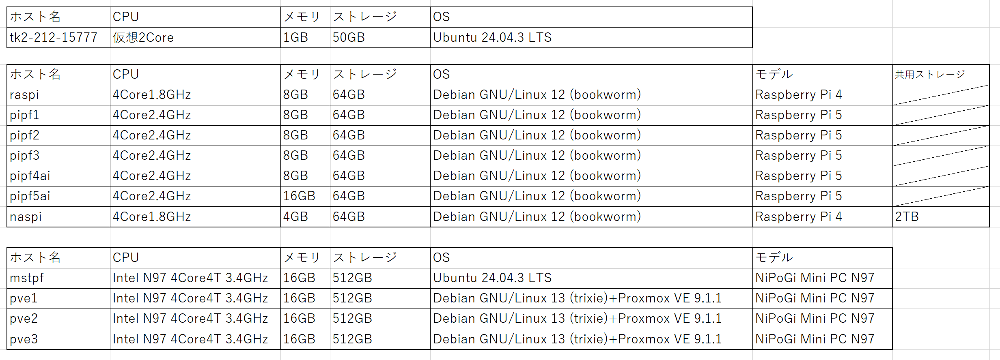

1. プロジェクト概要
自宅ラボ環境において、複数台のミニPCを用いた Proxmox VE ベースの仮想化基盤 を構築しました。
物理サーバをそのまま増やすのではなく、仮想化基盤上に複数の VM を集約することで、次のようなメリットを得ています。
- 検証用サーバの素早い立ち上げ・削除
- リソース（CPU / メモリ / ストレージ）の有効活用
- 障害時の復旧・移行のしやすさ
これにより、自宅ラボ全体の柔軟性と拡張性を高めています。
2. 目的・背景
これまで自宅ラボでは、Raspberry Pi などの物理サーバに直接 OS や各種サービスをインストールしていました。しかし、次のような課題がありました。
- 新しい検証を行うたびに OS の入れ替えが必要
- サービスごとの環境差分管理が複雑
- 物理障害が発生した場合の復旧に時間がかかる
そこで、仮想化基盤の導入による柔軟なリソース管理と運用効率化 を目的に、Proxmox VE を用いた基盤構築に取り組みました。
3. 物理構成（ハードウェア）
Proxmox クラスタを中心とした自宅ラボ全体の物理構成は、以下のハードウェアで構成しています。
Proxmox クラスタは NiPoGi ミニPCを、その他のノードは Raspberry Pi / VPS をベースとしています。
3.1 ノード一覧とスペック
| ホスト名 | CPU | メモリ | ストレージ | OS | モデル | 共用ストレージ |
|---|---|---|---|---|---|---|
| tk2-212-15777 | 仮想2Core | 1GB | 50GB | Ubuntu 24.04.3 LTS | ||
| raspi | 4Core 1.8GHz | 8GB | 64GB | Debian GNU/Linux 12 (bookworm) | Raspberry Pi 4 | |
| pipf1 | 4Core 2.4GHz | 8GB | 64GB | Debian GNU/Linux 12 (bookworm) | Raspberry Pi 5 | |
| pipf2 | 4Core 2.4GHz | 8GB | 64GB | Debian GNU/Linux 12 (bookworm) | Raspberry Pi 5 | |
| pipf3 | 4Core 2.4GHz | 8GB | 64GB | Debian GNU/Linux 12 (bookworm) | Raspberry Pi 5 | |
| pipf4ai | 4Core 2.4GHz | 8GB | 64GB | Debian GNU/Linux 12 (bookworm) | Raspberry Pi 5 | |
| pipf5ai | 4Core 2.4GHz | 16GB | 64GB | Debian GNU/Linux 12 (bookworm) | Raspberry Pi 5 | |
| naspi | 4Core 1.8GHz | 4GB | 64GB | Debian GNU/Linux 12 (bookworm) | Raspberry Pi 4 | 2TB（共用NAS） |
| mstpf | Intel N97 4Core4T 3.4GHz | 16GB | 512GB | Ubuntu 24.04.3 LTS | NiPoGi Mini PC N97 | |
| pve1 | Intel N97 4Core4T 3.4GHz | 16GB | 512GB | Debian GNU/Linux 13 (trixie) + Proxmox VE 9.1.1 | NiPoGi Mini PC N97 | |
| pve2 | Intel N97 4Core4T 3.4GHz | 16GB | 512GB | Debian GNU/Linux 13 (trixie) + Proxmox VE 9.1.1 | NiPoGi Mini PC N97 | |
| pve3 | Intel N97 4Core4T 3.4GHz | 16GB | 512GB | Debian GNU/Linux 13 (trixie) + Proxmox VE 9.1.1 | NiPoGi Mini PC N97 |
元の一覧表イメージも参考として掲載しています。

4. Proxmox 仮想化基盤の構成
4.1 クラスタ構成
Proxmox VE を用いて、複数ノードによる クラスタ構成 を構築しています。
pve1?pve3 の3ノードをクラスタとして構成することで、次のようなことが可能になっています。
- 単一の Web UI から全ノード・全 VM を一元管理
- Live Migration による VM のノード間移動
- 将来的な HA（高可用性）構成への拡張
4.2 ストレージ構成
現在は各ノードの ローカルSSD を VM ディスクの格納先として利用 しています。
シンプルな構成とすることで、初期構築のハードルを下げつつ、Proxmox の基本操作やバックアップ運用に集中できるようにしました。
将来的には次のような構成を計画しています。
- 分散ストレージ（Ceph）の導入
- 既存 NAS（naspi）との連携（NFS / iSCSI）による共有ストレージ化
4.3 仮想マシンの構成例
仮想化基盤上には、主に以下のような VM を配置しています。
- 監視用 VM（Zabbix プロキシ / テスト用 Zabbix サーバ など）
- 検証用 Linux サーバ（新しいディストリビューションの検証・学習用）
- Web アプリケーション検証用 VM
新しい検証を行う際には、テンプレートから VM をクローンすることで、数分で新しい検証環境を用意できるようになりました。
5. 運用・監視・バックアップ
5.1 監視
既存の Zabbix 監視基盤に Proxmox ノード（pve1?pve3）を監視対象として追加し、CPU 使用率・メモリ使用量・ディスク使用率・稼働プロセスなどを可視化しています。
5.2 バックアップ
Proxmox のバックアップ機能を用いて、重要な VM を定期的にバックアップストレージへ退避しています。
復元テストも実施し、バックアップデータから VM が正常に起動することを確認しました。
5.3 アップデート運用
Proxmox ノードおよび VM の OS 更新は、事前にスナップショットを取得した上で実施し、問題が発生した場合にはロールバックできるようにしています。
6. 工夫した点・苦労した点
6.1 工夫した点
- 自宅ラボという制約の中で、消費電力と性能のバランスを考慮し、NiPoGi ミニPCを選定。
- Proxmox のクラスタ機能を活用し、ノード障害時にも別ノードで VM を再作成しやすい構成を目指しました。
- Zabbix による監視と組み合わせることで、リソース逼迫や障害の兆候に早期に気付けるようにしました。
6.2 苦労した点
- 初期構築時には、クラスタ参加時のネットワーク設定やファイアウォールの影響で、ノード同士が正しく通信できないトラブルが発生。
- ログの確認や公式ドキュメントの参照を繰り返すことで原因を切り分け、必要なポートの開放や設定の見直しにより解決しました。
7. 学び・身についたスキル
このプロジェクトを通じて、以下の知識・スキルを実践的に身につけました。
- ハイパーバイザ型仮想化（Proxmox VE）の仕組みと基本操作
- クラスタ構成・ノード間通信・Quorum の考え方
- 仮想マシンのライフサイクル管理（テンプレート化、クローン、スナップショット、バックアップ）
- 監視システム（Zabbix）との連携による、リソース監視・障害検知
- ネットワーク設計（管理ネットワークと家庭用ネットワークの分離 など）
これらの経験は、将来的に企業の仮想基盤やクラウド環境の運用・設計に携わる上での基礎になると考えています。
8. 今後の発展アイデア
今後、以下のような発展を計画・検討しています。
- Ceph 等による共有分散ストレージの導入
- HA（高可用性）機能を有効にした、自動フェイルオーバー構成の検証
- Ansible を利用した VM デプロイや設定の自動化
- Kubernetes などコンテナ基盤との組み合わせ検証（仮想化基盤上での K8s クラスタ構築）